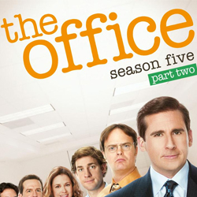

| Home | The Seasons | The Characters | The Reviews |

The Office |
The fifth season of the American television comedy The Office premiered in the United States in the 2008–2009 television season on NBC on September 25, 2008 and concluded on May 14, 2009.[1] The fifth season consisted of 28 half-hours of material, divided into 24 half-hour episodes and two hour-long episodes. The Office is an American adaptation of the British TV series of the same name, and is presented in amockumentary format, portraying the daily lives of office employees in the Scranton, Pennsylvania branch of the fictitious Dunder Mifflin Paper Company.
The fifth season of The Office aired on Thursdays at 9:00 p.m. (Eastern).[2] The season was released on DVD in a box set containing five disks featuring all 28 episodes with audio commentaries on select episodes. The DVD was released by Universal Studios Home Entertainment.